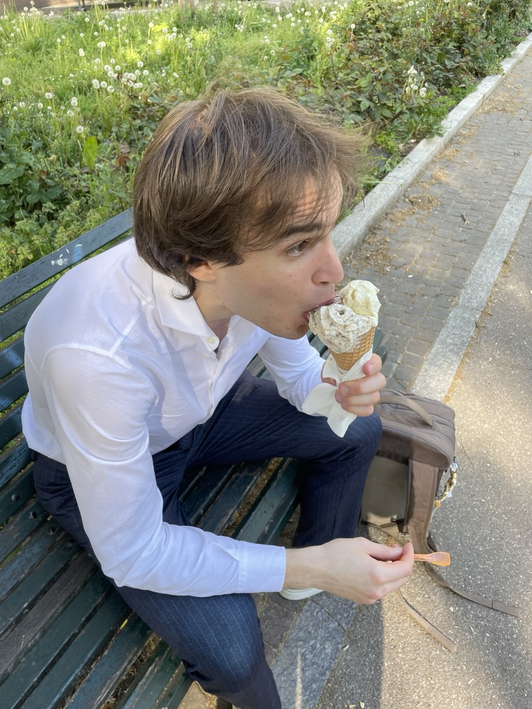

Hi, I'm Alessandro Biagiotti, but peope call me Bigi!

PhD-bound MSc graduate in Computer Science with a focus on High-Performance Computing. I consider myself a person of broader views and I see curiosity as one of my biggest strengths. Deeply interested in the world of Physics, with experience in ML applied to superconductors and a varied portfolio ranging from hands-on projects in CUDA game development and distributed systems programming. My profile is rounded up by a strong theoretical background in computer science and mathematics.
Featured projects
The islgen stencil compiler
An eDSL written in C++ to compile stencils into highly efficient CPU code
Machine learning for quench detection in HOC magnets
Master thesis project meant to correctly identify and classify events of superconductivity loss within the assembly of High Order Corrector magnets mounted in proximity of experiments at the Large Hadron Collider.
GPU computing project
A project for the GPU computing course
Greenfield
Project of distributed and pervasive systems at the unviersity of Milan.